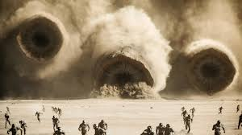
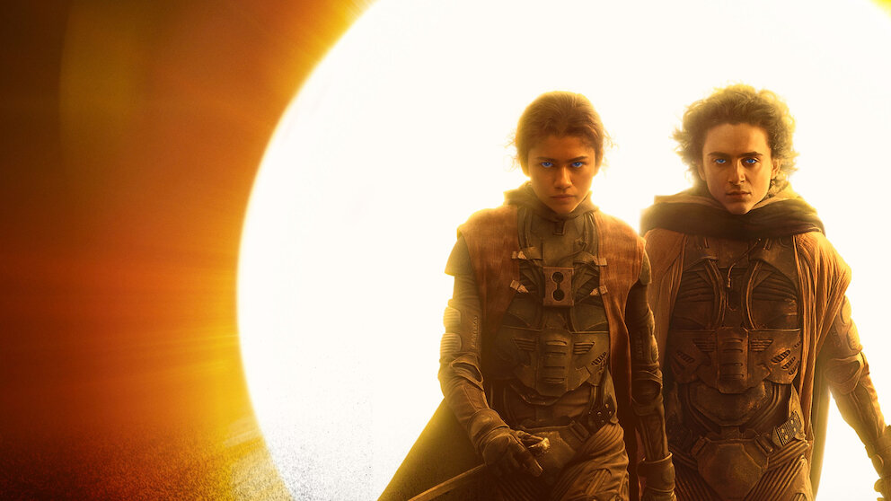
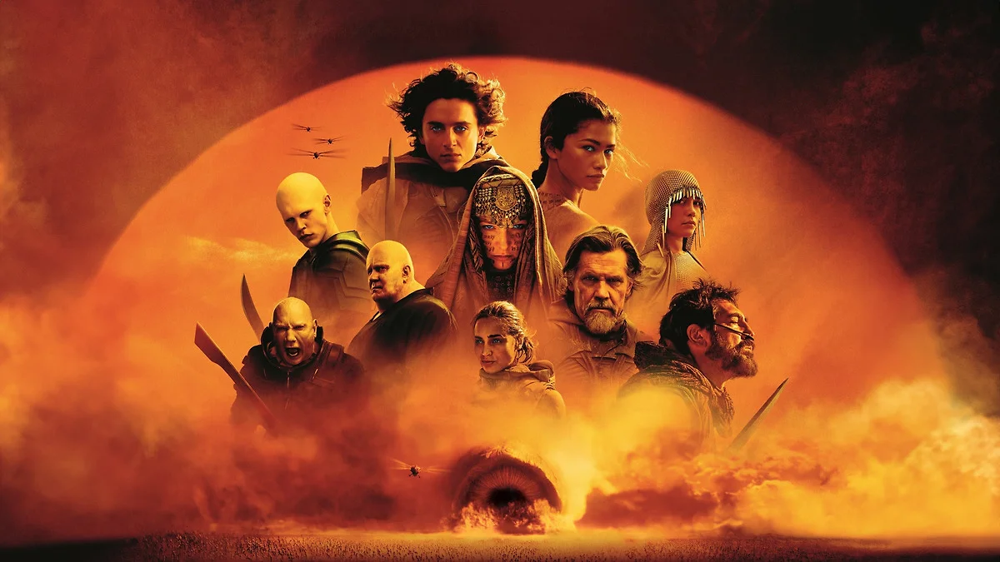
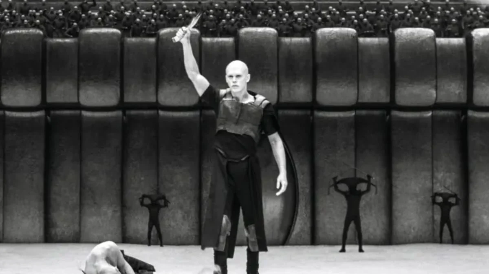

Universo
Duna é uma série de livros de ficção científica onde acompanhamos um desenrolar de uma trama política que se inicia em um planeta conhecido como "DUNA", rico em um material muito importante para a sociedade intergalática desta ficção. Veremos Poul Atreides se desdobrar para sobreviver neste planeta enquando escala suas escalam essa trama para uma guerra muito maior que o planeta onde habita.
Livros
A série de livros compõe primeiramente uma trilogia escrita por Frank Herbert e tratam principalmente desde o começo da tragetória de Paul Atreides e sua influencia ao decorrer da história que inclui seus decendetes. Depois segue-se a segunda trilogia, escrita pelo mesmo autor, onde veremos como a galáxia está muitos anos após todos os eventos da primeira trilogia. A leitura pode parecer complicada no início visto os vários nomes diferentes que encontra-se neste universo mas, na verdade, isso só nos mostra o quão rico é este cenário fictício e, logo após os primeiros capítulos, tudo fica muito mais fácil de entender. A série não termina com esses 6 livros, ao total são 26 mas os demais livros foram escritos pelo filho do autor original.
Filmes
Você já deve ter ouvido falar dos recentes filmes do DUNA. Ambos feitos pelo diretor Denis Villeneuve que é um fã da obra de Frank Herbert. Nos atuais dois filmes acompanhamos a tragetória de Paul Artreides (Timothée Chalamet) até o que seria o final do primeiro livro. Levemente diferente mas igualmente magestoso, o diretor conseguiu adaptar os livros de uma forma onde muitas cenas são marcartes. É impossível assistir sem se encantar pela beleza fotográfica do fílme e de suas cenas inesquecivelmente bem construídas.